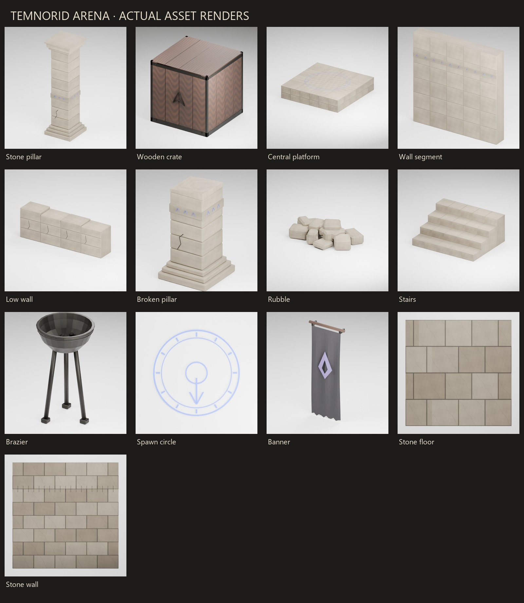

Heroic duels
Temnorid Arena
Step into the arena. Win your class’s crown.
Fight as a Warrior, Archer or Mage in the courtyard.
Download for WindowsFree · Windows 10 or later, 64-bit
In development
About the game
Heroic duels, glory and trophies.
Step into the arena, face other heroes, and fight with weapons and elemental magic. Win, raise your reputation and earn unique rewards.
The courtyard and the mage are the real models; the Warrior and the Archer borrow the mage's body until their own models exist.

How to play
The first playable is a free-for-all in a stone courtyard: you and five bots, two fighters of each class, Warrior, Archer and Mage. Every period the best fighter of each class becomes that class’s Hero.
- Choose your class on the start screen: Warrior, Archer or Mage.
- Fight everyone in the courtyard. Bots of all three classes hunt you and each other.
- Defeat a fighter and score a kill. If you fall, you are back after three seconds at the spawn circle furthest from the fighting.
- When the period ends (90 seconds), the fighters of each class are ranked against their own class: most kills first, then fewest deaths.
- The best fighter of each class becomes that class’s Hero and wears a gold HERO badge through the next period: up to three Heroes, one per class.
- Start the next period and try to take a Hero title, or defend yours.
You win
Score the most kills in your class during a period to become its Hero.
You lose
There is no losing: if you fall, you come back after three seconds. Your best period and how often you were Hero are saved.
Controls
| Key | Action |
|---|---|
| W A S D | Move |
| Mouse | Look and aim |
| Shift | Run |
| Space | Jump |
| Left mouse (hold) | Attack: sword swing, arrow or fireball |
| Tab (hold) | Scoreboard |
| V | Switch between third and first person |
| Esc | Pause menu (resume, main menu) and frees the mouse for the top bar |
Keyboard and mouse on Windows, touch on phones. Your progress is saved on your PC.
Playing with others
Up to four people fight in the same courtyard, free for all. Choose Play with others on the main menu: one player hosts (a direct address on the same network, or a short code), the others join. Each person picks a class; bots take the other fighters, and a bot gives its place to anyone who joins later. The host runs the bots, the periods, the score and the Heroes and checks every hit. If the host leaves, the match ends for everybody.
Windows, Android and iOS players can meet in the same match.
Updates
The Windows game updates itself from the newest GitHub release when it starts. You can turn that off in Profile.
Phones
Android and iOS builds are made from the same project with Unity Build Profiles. A stick on the left moves, dragging the right side looks, and Attack, Jump, Run and Pause buttons sit on the right; the tabs along the bottom open the scoreboard and your profile. The class screen and every menu work by tap.
Part of the world of Temnorid
Arena results, reputation and trophies are meant to carry into Lords, where heroes are raised. Today Arena does not talk to Lords.
The first time you press Play, you can sign in with the same Google account as in Lords, play as a guest, or play offline; Profile lets you change this later. Google sign-in is offered on Windows; phones offer guest only for now. The account gives the game your name and nothing else. Arena does not need an account: the single-player game works fully offline, and only signing in, playing with others and updates use the internet.
Download
Latest published installer: 0.2.0. Development version: 0.3.0. This page describes the development version; some features are not in the published installer yet.
Free · version 0.3.0 · Windows 10 or later · installer.
- Download the installer and run it.
- Windows may warn about an unknown publisher, because the installer is not signed yet. Choose More info, then Run anyway.
- Start Temnorid Arena from the Start menu.
Requires Windows 10 or later, 64-bit. All releases and release notes: GitHub Releases.